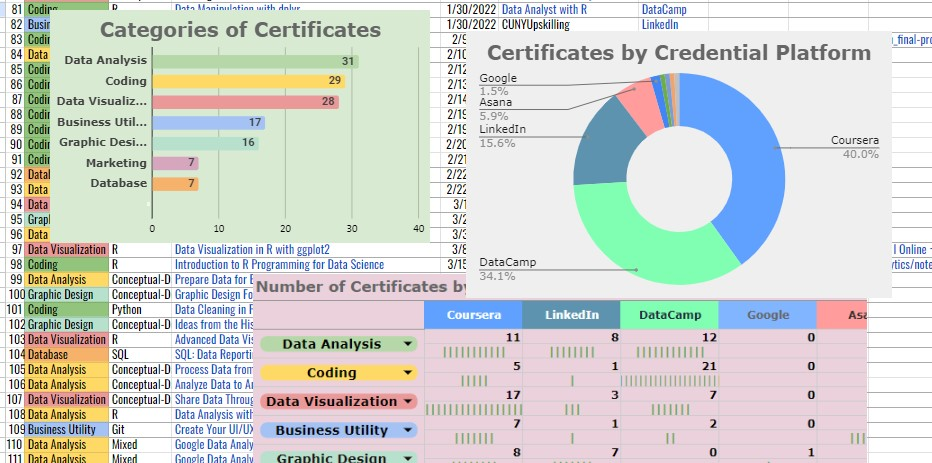

ABOUT ME:
{
Data Analysis | Data Visualization {
for Marketing:
else Procurement data:
}
return Happiness;
}
Data Analysis | Data Visualization {
for Marketing:
else Procurement data:
}
return Happiness;
}
***
> glimpse(OBJECTIVE)
Data Analysis for Business Decisions:

Recent MBA with professional experience in fast-paced global mega corporations, currently in Data Analysis & Visualization MS program to acquire adaptive yet in-depth data methodologies that can leverage quantitative representation in practical frameworks. Combines data expertise in statistical analytics with strategic business administrative/managerial initiatives. Passionate about aesthetical science models executing advantageous versatility nurtured in various fields.
> summarize(EDUCATION)
Connecting Dots:
While I was studying Financial Economics at Medgar Evers College, CUNY, for my bachelor's degree, I developed my curiosity in regression models on stocks using historical corporate finance data and enjoyed plotting visualizations to present my findings. After finishing my undergraduate program, I naturally proceeded to business school to study more finance.

During the MBA program at Zicklin School of Business Baruch College, CUNY, I evaluated companies' net worth as well as their corporate health day to day, I also became interested in how they implement their corporate value using digital marketing strategies. Namely, the Digital Marketing and Web Analytics courses also sparked my strong interest in quantitative and qualitative business analytics. Extending my knowledge in data analysis then became my next mission and I started analyzing marketing data more in numerical approximation.

At the beginning of COVID-19 pandemic that pushed us to instant uncertainty for normalcy, I decided to pursue another master's degree in Data Analysis and Visualization program at CUNY Graduate Center from Fall 2020. I was totally right that I made that choice -- I find myself another extensive academic indulgence in exploring new analytical models using statistical methods, and visualization techniques that enable to solve real world problems. The program offered PhD courses by request and I had opportunities to study quantitative methods with PhD students of which experience highly contributed to my intellectual curiosity. Up to here, all my higher education stack were pursued in City University of New York system and I believe it had been a great competitive advantage to lead the world of innovation and development here in the center of business universe.

Besides quantitative studies, my undergrad experience at Medgar Evers College helped me understand the current social problems and established a foundation of my perceptives on human rights equity effort today - not just only by scientific approaches and methodologies, but also by the literal contexts and values through literatures, such as books by Audre Lorde or philosophy of Angela Davis, to name a few.
> summarize(EXPERIENCE)
Accepting Challenges:

Prior to receiving a college degree, I had more than ten years of extensive experience working in an international environment at top finance companies (i.e. Bloomberg, Citi, Bank of America Merrill Lynch etc.). As a procurement and vender management specialist, I initiated data management systems for the teams I worked for, using advanced spreadsheet skills. I also worked collaboratively with Finance/Accounting teams for PO reconciliation, Facility teams for onboarding large IT equipment orders, and external vendors for service maintenance contract and system integration roadmaps based on the data from internal users' requirements and project budget.
I was fortunate to have been able to work in such big corporations before I embarked on academic journey. It was made possible because in my early career, I had always accepted challenges and did not hesitate to knock on the door to the new stages. The path was never easy, the lack of education that my colleagues had required me to learn everything immensely and quickly. Those experiences, lots of fails accompanied with achievements eventually grew to my confidence, now with much more skills added during the journey. That is why I am always ready to contribute my expertise through my affluent business experience and create another awesomeness with you.
> typeof(STRENGTHS)
Clifton Strengths Report:
According to a trusted survey with the Gallup's own CliftonStrength report, my top 5 themes, which, even set aside their great reputation for credibility, I comprehensively acknowledge as my traits are as follows.
1. Individualization: figures out how different people can work together productively
= Growing up in exceptionally diverse neighborhood in conventionally a homogeneous country, I learned people set different milestones according to their lifestyle at early age despite the traditional education there valued more on uniformity in general. For me, once a boat is built for crew members that share the same destination, I make sure everyone is on the same boat throughout the journey but all while I value their own expertise and priorities.
2. Positivity: upbeat and can get others excited about what they are going to do
= Yes, I love seeing people thriving for achievements and I'm a big supporter of people who have plans to make a better world, including myself.
3. Strategic: quickly spots the relevant patterns and issues
= The reason I made it to an MBA and a data analyst.
4. Input: accumulates information, ideas, artifacts or even relationships
= I believe myself as an ultimate figure of the product of what I eat, what I read, and the exceptional experiences that no one ever can have, and in this theory I am determined I'll be the smartest me when I die at 100 years old.
5. Activator: makes things happen by turning thoughts into action. Also wants to do things now, rather than simply talk about them
= Most of the times, I initiate a move to make ideas come to life. Do not tell me "let's catch up sometime soon" with no intention of doing so, because once you say that, I'd already have a plan for what we could do when we actually meet "sometime soon".
My entire Clifton Strengths Report can be viewed/downloaded here.
If you are seeking to work with a person full with positivity and strategies, I'm here for you! Please contact at shot[dot]mba @ gmail[dot]com to discuss what I can do to help grow your business.
> library(CERTIFICATES)
Here's the list of my completed courses since July, 2020, which I named Leaning Machine Project inspired by Charles T. Munger's speech at the USC Law School commencement. Every courses have helped me as my representation foundation for what I could demonstrate today.

> read_blog('Grad Life')
https://mbadigitalmarketing.wixsite.com/mysite/blog
> print(TESTIMONIALS)
"Shoko exudes determination in everything she does. Her passion and drive are felt by everyone around her. She is an excellent person to work with and is indispensable to any organization she is with."
Miguel MendozaNetwork Architect at DXC Technology
" I've been serving fortune 500 foreign invested firms for nearly 15 years and Shoko was one of my candidates from the professional network I established.
I had a client seeking a candidate for a niche and not well known area of specialty. Basically, my search and introduction was at zero! However, Shoko picked up the book, picked up the knowledge in 1 month, and filled that opening.
I highly recommend Shoko's ability on picking up on new things, and 'do-it' attitude for true innovative leadership. I am confident that she will be a big asset to your firm, in this fast paced market! "
Anthony BeasleyManager, IT& Professional Services Division / Sr. Executive Recruitment Consultant at PAL K.K.
" Shoko is a motivated and committed individual with demonstrated leadership qualities.
While at Medgar Evers College (MEC), she founded the International Student Organization to further the interest of exchange and foreign student attending MEC.
As a participant of MEC’s inaugural Executive Leadership Certificate Program, Shoko was a valuable contributor to the discussions and debate around leadership strategies that lead to the solution of complex issues in ever changing business and political environment."
William BlairDirector of Career Services at Get Out Stay Out (GOSO)
" Shokolatte is passionate about her education and a very hard worker. She makes collaboration an ease and adjusts to new environments very quickly."
Bonnie Q Harris, M.A." Shoko has been an indispensable part of the Graduate Student Assembly since she joined our team a year ago. Internally, she created a structure for sharing organizational and financial documents. Externally, she recruited a team of dedicated grad students to help her build our first independent website, a monthly student newspaper with updates on student life, and documented social events. She did this all despite the many bureaucratic obstacles that come with working at a public college, which only proves her resilience to accomplish any goal she has set for herself. Through her hard work, we were able to create a greater sense of community among graduate students."
Maria MarkowiczVice President of Baruch GSA 2018-2020
" Shoko is a hardworking and driven and can accomplish anything she sets her mind to get things done! I have known Shoko since Fall 2020 as we're both students in the MS Data Analysis and Visualization (DAV) program at the CUNY Graduate Center—first as a fellow student and then as a fellow student committee representative.
During that time, the DAV program was pretty new, so DAV students did not formally have a voice in Doctoral and Graduate Student Council (DGSC) student government. Therefore, Shoko took the initiative of getting enough signatures to ensure that DAV students could have a voice and became one of the first student committee representatives on the Executive (2020-2021) and Faculty (2021-2022) committees.
Furthermore, she created a student-only Slack channel so that other DAV students can intermingle with one another about whatever is on their minds. Considering that the CUNY Graduate Center has been mostly remote from 2020 to now, it's not easy to build student and faculty engagement. I respect and admire Shoko's resiliency and determination to make things work under these circumstances."
Sheryl WilliamsFormer DAV Executive Student Committee Rep